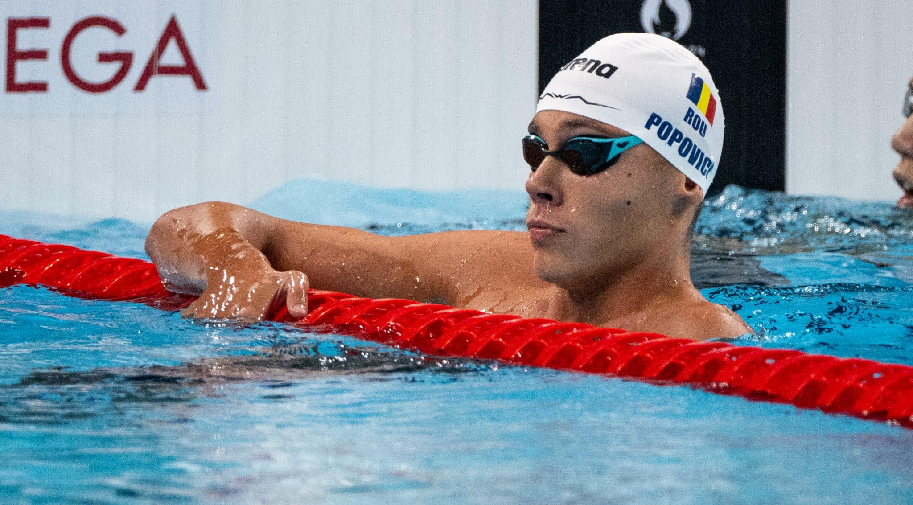

Jocurile Olimpice 2024
Programul românilor la Jocurile Olimpice
Paris 2024: ziua de 29 iulie începe
cu echipele de la canotaj,
iar seara se poate încheia
cu medalie pentru David Popovici în
finala de 200 de metri liber
- Canotaj
- 12:20 patru vâsle masculin – recalificări:
Leontin Nuţescu, Andrei Lungu, Florin Horodişteanu, Ioan Prundeanu
- 12:30 patru vâsle feminin – recalificări:
Mădălina Moroşan, Emanuela Ciotău, Alexandra Ungureanu şi Patricia Cireş
- 12:40 opt plus unu masculin – serii:
Ştefan Berariu, Constantin Adam, Mihăiţă Ţigănescu, Mugurel Se
- 3:00 opt plus unu feminin – serii: Maria Magdalena Rusu, Roxana Anghel,
Ancuţa Bodnar, Maria Lehaci, Adriana Adam, Amalia Bereş, Ioana Vrînceanu, Simona Radiş, Victoria Ştefania Petreanu
- ciclism
- inot

- tenis
- programul competitiilor sportive